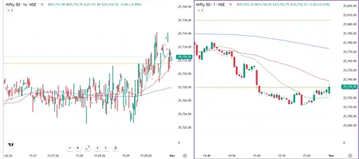
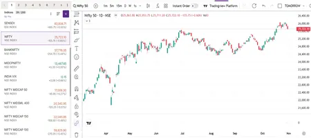
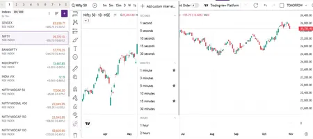
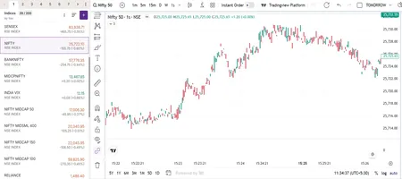

Tick Trading Call vs Put OI charts Live
Monitor option-chain data, Call vs Put OI, highest Open Interest strikes, PCR and intraday charts for Nifty and BSE Sensex, with additional mapped index panels. Live availability is shown per panel and depends on a valid, authorized market-data token. The dashboard refreshes automatically and labels sample or unavailable feeds instead of presenting them as live.
Call vs Put OI
Compare Call and Put open interest across available indices to understand OI distribution and changes in market positioning.
Updated: —
Nifty Live PCR Today
Check Nifty Live PCR Today to track the latest Nifty Put Call Ratio (PCR), live call and put open interest (OI), and changes in options positioning. Analyze Nifty PCR data, maximum call OI, maximum put OI, and strike-wise open interest changes to identify potential support and resistance levels. Use the live Nifty PCR today alongside Nifty 50 price movements to understand options market sentiment and monitor bullish or bearish trends.
Live Futures OI Buildup
Identify how traders are positioning in Nifty futures — Long Buildup, Short Buildup, Long Unwinding, or Short Covering.
Historical F&O Data
Browse, filter and download clean end-of-day data for Nifty futures, options, implied volatility and PCR.
Nifty Historical Charts
Every chart you need — intraday since 2015, expiry behaviour, option premiums, open interest, PCR, implied volatility and expiry comparisons.
Nifty Historical Data
Explore the biggest single-day moves, extreme gaps, long-term returns and valuation history of Nifty 50.
Nifty Option Backtesting
Test any of the 12 classic option strategies on historical Nifty data. Compare P&L, win rate, max drawdown and Sharpe.
Trading Tools & Calculators
A complete toolkit for traders and investors — technical analysis, risk management, investment planning and utility calculators.

Trading Tick
A trading tick is the price movement of a stock, forex, index or commodity in the market. Each tick indicates the smallest change in price movement which happens, whether upward or downward. For stocks, this is typically $0.01; for some stocks it can be more like 0.05, 0.25, 0.50, 1 or even 5. For futures and other options, tick sizes are different for every contract. Ticks are units of price movement that traders track to find out momentum, direction, volatility, and potential entry or exit points, support or resistance in their trading strategies.
Tick Trading
Tick trading is used by HFT traders or scalpers. They track tick-by-tick prices as they want to profit from small ticks. This real-time data stream helps traders use tick prices in their favour. Tick-by-tick prices include price, volume, and timestamp for each transaction that happens in the market. Unlike summarized data that shows information over time periods, tick-by-tick data gives traders complete transparency into market activity — what is happening, whether the open interest is building up or unwinding — enabling traders to do order-flow analysis, trade patterns, strike-by-strike OI changes and futures open interest changes.
Tick Trader
A tick trader is a specialized person who makes trading decisions based on very short-term price movements, like seconds or milliseconds. These are often HFT or scalpers who want quick gains in multiple trades. They focus on individual ticks or small clusters of ticks by which they can earn quick money. These traders enter and exit trades on extremely short timeframes, hold positions for seconds to minutes, and mostly rely on technical analysis on second or millisecond timeframes. Tick traders aim to profit from small, frequent price movements rather than long-term trends or short-term trades like intraday. Tick trading requires intense focus, quick decision-making, and sophisticated trading platforms. This can lead to burnout or high stress.
Tick Tick Trade
Tick-tick trades are trades occurring in quick, consecutive intervals like seconds or milliseconds in financial markets. This term basically refers to high-frequency trading environments where automated systems (algo trading) execute thousands of transactions per second, with minimal time between each trade. Algorithmic trading systems work at a machine-gun-like pace in electronic financial markets and can make quick gains on tiny price movements and arbitrage opportunities that exist for only a few seconds or minutes.
Trading Tick OI Charts
Trading tick OI charts are option analysis tools that display open interest data for each strike price. These charts show how many option contracts are open at each strike price of Nifty, Bank Nifty, Fin Nifty, Sensex, stocks or banks. You get insights into market depth and liquidity of each stock or index option at each strike. By tracking Call vs Put OI changes, traders can identify potential support and resistance levels to enter and exit trades. This also helps tick traders to trail stop-loss or book profits. It also helps traders gauge the strength of price movements, so they can enter or exit trades confidently.
How Tick Traders Use Tick by Tick Charts
Login to Your Broker Account
Login into your broker's account using your login credentials. We have used the Upstox platform for demonstration purposes.

Select Stock or Index
Select the stock or index that you want to analyze using tick-by-tick charts for tick trading.

Select Tick Size
Choose your preferred tick interval such as 1 second, 5 seconds, 10 seconds, 15 seconds, or 30 seconds.

Tick by Tick Chart Ready
Your tick-by-tick chart is now ready to use for tick trading analysis.
Pros & Cons of Tick Trading
| Tick Trading Analysis | Pros | Cons |
|---|---|---|
| Speed | Instant gains | Trader can over-trade |
| Entry / Exit | Fast entry and exit points | Not possible manually every time |
| Strategy | Used for high-frequency trading strategies | Increased transaction costs due to frequent trading |
| Profits | Early in trade to maximise profits | Can lead to loss if whipsaw |
| Patterns | Instant identification of price patterns | Cannot be used for long-term strategies |
| Risk | Better risk management with live data | Algo subscription costs reduce profits |
| Analysis | Better in-depth analysis | Requires constant screen monitoring |
| Opportunity | Good opportunity for arbitrage and scalping | Psychological stress and burnout risk are high |
Faq on Trading Tick
We provide free historical data for futures and options trading.